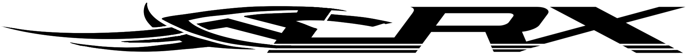
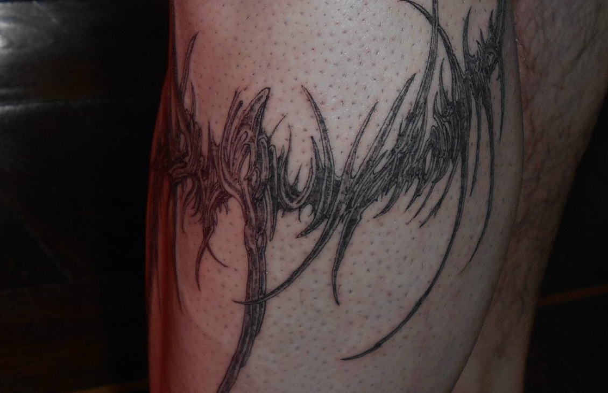

SPIKEs & CROSSEs
[home freehand ://]

STARs BRITHMARK
[freehand]

TRIBAL BIT S
[according to the sketch]

METADARK PEAKs
[freehand]

[home freehand ://]
[freehand]
[according to the sketch]

[freehand]